01-05-2017
|
OPIS KONCEPCJI Kamerki astronomiczne dla obniżenia na zdjęciach poziomu szumu posiadają chłodzone ogniwami peltiera matryce, niestety gdy zostaną schłodzone do bardzo niskich temperatur (-20,-40,-60 C) zachodzi na nich zjawisko wytrącania się wilgoci z otaczającego je powietrza, niczym na zimnej puszcze Coli wyjętej latem z lodówki. Celem uniknięcia tego problemu są one zamykane w szczelnej komorze w której dodatkowo umieszczane są specjalne tabletki pochłaniające wilgoć. Niestety ostatnimi czasy to wszystko okazało się nie wystarczające, dlatego producenci najnowszych kamer, dodatkowo całość zamykają w otoczeniu o bardzo niskiej wilgotności, dlatego też nie zalecają rozszczelniania komory w warunkach domowych, gdyż objawi się to znacznym zawilgoceniem komory matrycy i może stać się powodem wytrącania się rosy już przy znacznie niższych temperaturach (np. -10, a nie dopiero przy -20 czy -30) Niestety szczelność komór nie jest doskonała więc z czasem może pojawić się konieczność przeciwdziałania zbyt wcześnie roszącej się matrycy. Dodatkowo też, mimo że wewnątrz jest sterylnie czysto, zawsze znajdą się jakieś zanieczyszczenia przemieszczające się swobodnie, kiedy są przyklejone gdzieś do ścianek komory, nie stanowią dla nas powodu do zmartwień, kiedy jednak postanowią pewnego dnia upaść trwale na okienko komory lub szybkę matrycy, dając nam na zdjęciach w tym miejscu czarną plamę, stają się obiektem naszej troski. Wiele osób toleruje cały wysyp takich zanieczyszczeń usuwając je flatami, jednak są pewne granice tolerancji i zależą one od ilości, wielkości i miejsca usadowienia szkodników. Co powstrzymuje właścicieli takich kamer przed odkręceniem okienka komory i oczyszczenia optyki? Na pewno to co opisałem powyżej, problem zawilgocenia komory, dodatkowo też brak umiejętności pracy w sterylny sposób, bo nie robi się tego na obrusie, na stole w pokoju, brudnymi rękoma, palcami, lecz trzeba wypracować pewne standardy czystości i zachowań a pomijając problem wilgoci, można taką komorą zamknąć naprawdę wolną od najdrobniejszych zabrudzeń. Ale wracając do omawianego na wstępie zagadnienia. Jak w domowych warunkach zamknąć komorę matrycy kamery z jak najsuchszym powietrzem w środku? Pod czas prac z ogniwami peltiera wiele razy obserwowałem jak zimna strona wytrąca z otoczenia zawartą w nim wilgoć, wpadłem więc na pomysł, że gdyby tak z szczelnych warunkach na chwilę rozszczelnić komorę matrycy i poddać ją działaniu zjawiska wytrącania ogniwem peltiera zawartej w powietrzu wilgoci i następnie nadal w szczelnych warunkach zamkniętego układu, taką komorę zamknąć, to po całej procedurze powietrze w niej zamknięte powinno zawierać o wiele mniejszą zawartość wody, niż gdyby to zrobić w normalnym otwartym układzie powietrza domowego. Całość wymagała zaprojektowania odpowiedniego urządzenia dopasowanego do obecnej budowy kamer oraz wypracowania stosownej procedury pozwalającej na rozszczelnienie komory matrycy w zamkniętym otoczeniu, obniżenie wilgotności zawartego tam powietrza i szczelne zamknięcie komory, cały czas bez udziału powietrza otoczenia domowego. Do tego celu zbudowałem urządzenie którego zdjęcia i opis znajdują się poniżej. OPIS BUDOWY Głównym tworzywem konstrukcyjnym jest plexi 3mm, dobrej jakości, nie rysujące się zbyt łatwo, zastosowałem ją z uwagi na fakt możliwości obserwowania z każdej strony poprawności wykonywanych czynności w komorze. Klejenie wykonane nowym świeżym Super Glue, taki klej łączy naprawdę sztywno i trwale, ale jedynie umiejętnie użytkowany nie "zafajda" nam całej komory, ani samym sobą, ani nalotem z procesu schnięcia. Jeśli ktoś nie posiada doświadczenia w klejeniu tym klejem elementów przeźroczystych to nie polecam, bo efekty mogą być opłakane w skutkach, lepiej wybrać przezroczysty Poxipol.. Pozostałe elementy to: - Ogniwo peltiera TEC1-03108 | 20x20x3.5(mm) | 16.8W | 8.5A | Napięcie zasilania (max): 3.75V co idealnie wpasowuje nam się w zasilaniem go ATX-em 3,3V. - Samodzielnie wykonany blok wodny na bazie aluminiowego radiatora 37x37x10(mm) którego zadaniem jest chłodzenie gorącej strony ogniwa peltiera. - Tulejka i ośka z Video VHS jako ramię podnoszące okno komory matrycy. - Uszczelka. Całość na dole została uszczelniona gumką ze sprzętu RTV o przekroju 1x1(mm) i średnicy okręgu 65mm. - Dwie gumki. Po odpowiednim ustawieniu urządzenia na froncie kamerki, całość jest dociśnięta owiniętymi dookoła dwiema grubymi mocnymi gumkami. Szczegóły widać na zdjęciach. SPOSÓB UŻYCIA Odkręcamy obie śrubki mocujące pierścień dociskowy okienka komory matrycy (każda naprzemiennie po 1/4 obrotu gdyż ich nieprzemyślane przez producenta zastosowanie przy odkręceniu pierwej jednej, potem dopiero drugiej, sprawi, zbyt duży nacisk na stronie nie odkręconej a już zerowy na odkręconej co objawia się przechyleniem się pierścienia dociskającego i może spowodować uszkodzenia okienka komory). Zdejmujemy pierścień i widzimy, że po tak długim czasie okienko komory od docisku trwale skleiło nam sie z uszczelką komory, musimy więć delikatnie wykałaczką naciskać na brzegi okienka tak, aby odkleiło nam się od uszczelki. Szybka uwolniona, zakręcamy więc pierścień z powrotem po 1/4 obrotu śrubek. Teraz musimy zmusić okienko komory, aby tymczasowo połączyło się z pierścieniem który je dociska, gdyż unosząc potem pierścień będziemy chcieli, aby uniosła się w raz z nim i szybka. Ja uzyskałem to przyklejonymi na obrzeżach kilkoma małymi kawałeczkami 10x3(mm)dobrej taśmy samoprzylepnej (patrz foto) jeśli po tym zabiegu zostanie nam jakiś klej to spokojnie na sam koniec usuniemy go benzyną ekstrakcyjną. Takie paski tniemy bardzo ostrymi nożyczkami, chwytamy ostrą pensetą a przyklejane dociskamy patyczkiem kometcznym, a nie paluchami :) (patrz foto) Jak widzicie takie zabiegi są dla osób posiadających wypracowane wysokie standardy dokładności i czystości, jeśli poprzednie zdanie wydało Wam się dziwne, dalej nawet nie czytajcie. Teraz całość komory instalujemy na froncie kamerki, całość stawiamy w pionie, odkręcamy śrubki mocujące pierścień dociskowy okienka i wyciągamy je, zaklejamy kawałkami taśmy 10x10(mm) zewnętrzne otwory którymi odkręcaliśmy śrubki, opuszczamy środkowe ramię i dociskamy je tak, aby przyklejone na ramionach jego poprzeczki skrawki taśmy dwustronnej chwyciły pierścień dociskowy okienka wraz z okienkiem i unosimy je do góry blokując je w tej pozycji. Teraz nasza komora połączyła się zawartym w sobie powietrzem z przed chwilą rozszczelnioną komorą matrycy. Możemy przystępować do osuszania zawartości poprzez wytrącenie zawartej tam wilgoci na zimnej ściance ogniwa pelteira. Włączamy pompę bloku chłodzącego ogniwo, włączamy też samo ogniwo i czekamy kilka minut, aż zgromadzi się na ogniwie szron, po czym zamykamy komorę matrycy poprzez opuszczenie środkowego ramienia komory na dół wraz z okienkiem i pierścieniem je zaciskającym i dociskamy je cały czas do uszczelki ramieniem które ją uniosło. Teraz odklejamy drugą ręką kawałki taśmy uszczelniające zewnętrzne górne otwory komory, mogąc przez nie swobodnie zakręcić śrubki zaciskające pierścień dociskający okienko komory matrycy (pamiętajcie, po 1/4 obrotu) Puszczamy dociskane ramię, już okienko trzymają śrubki, wyłączamy peltiera, wyłączamy blok wodny, zdejmujemy całość, komorę matrycy kamerki mamy odwilgocone. AUTOR PONIŻSZEJ KONSTRUKCJI, ORAZ KONCEPCJI, NIE PONOSI ODPOWEDZALNOŚCI ZA WSZELKIE SZKODY WYNIKAJĄCE Z NIEUMIEJĘTNEGO WYKORZYSTANIA ZAWARTYCH POWYŻEJ TREŚCI. NIE MA ON WPŁYWU ANI NA UMIĘJĘTNOŚCI POTENCJALNYCH NAŚLADOWCÓW, ANI NA PRZYPADKI LOSOWE MOGĄCE WYNIKNĄĆ Z FAKTU PODJĘCIA SIĘ POD WPŁYWEM POWYŻSZEGO OPISU ZADAŃ KTÓRYCH NORMALNIE WŁAŚCICIELE DANEGO SPRZĘTU BY SIĘ NIE PODJĘLI, CZYM UNIKNĘLI BY JEGO USZKODZANIA. WIĘC ZANIM PODEJMIESZ SIĘ NAŚLADOWNCTWA, ROZWAŻ, CZY POSIADANE UMIEJĘTNOŚCI SĄ WYSTARCZAJĄCE. Szybka komory matrycy z odkręconym pierścieniem dociskowym 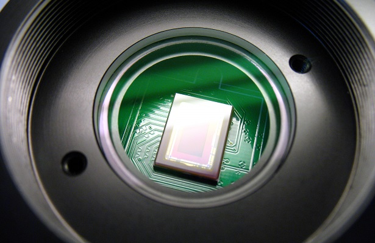 Sposób unieruchamiania szybki za pomocą pasków taśmy samoprzylepnej 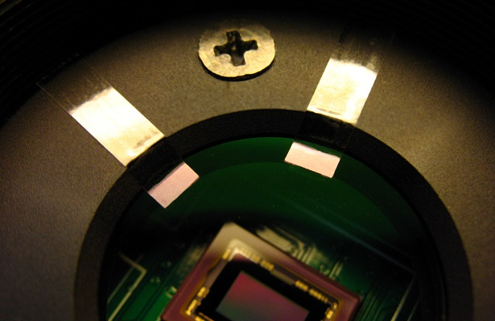 Komora 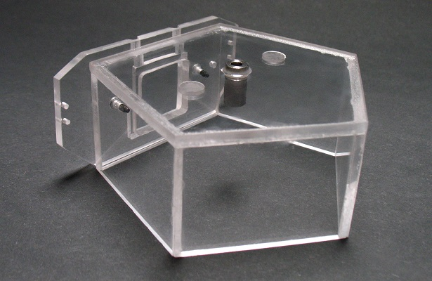 Komora 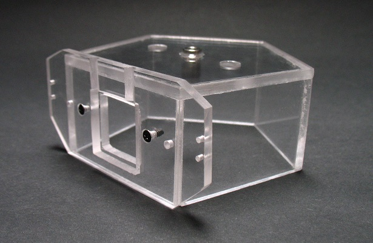 Komora 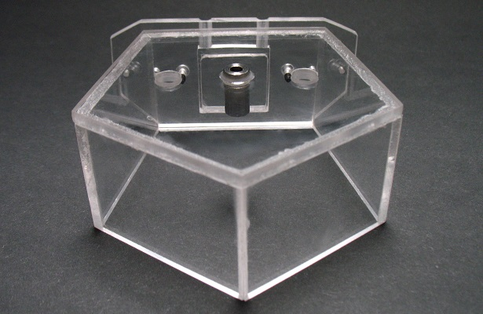 Komora 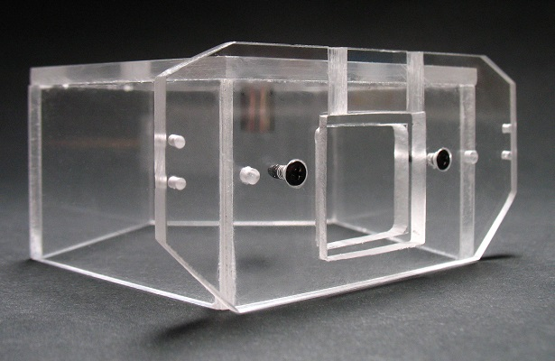 Komora  Komora 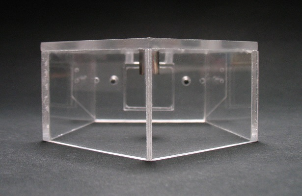 Blok wodny zbudowany na bazie aluminiowego radiatora 37mmx37mmx10mm 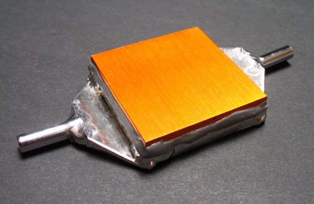 Radiator 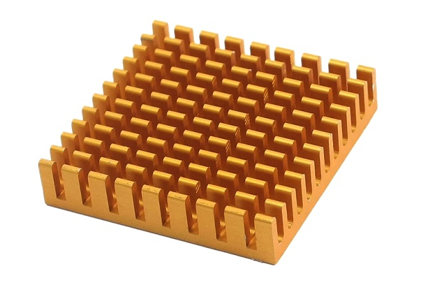 Blok wodny - rzut boczny 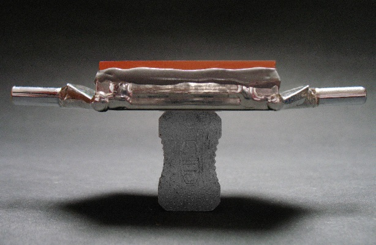 Sposób umocowania komory na kamerce 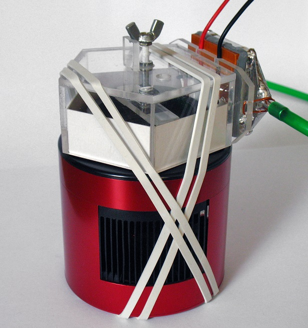 Widok z komory z uniesionym pierścieniem dociskowym i okienkiem komory. Trwa osuszanie. 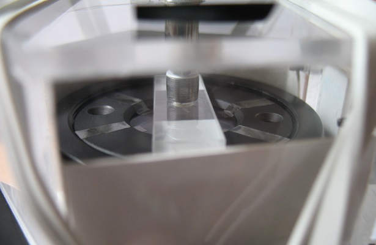 Zablokowanie ramienia unoszącego pierścień dociskowy na podporze (uszczelniony pastą silikonową) 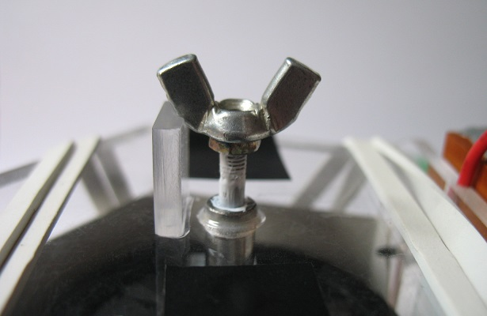 Ogniwo peltiera podczas pracy, widać gromadzący się na nim szron  Zbliżenie na szron 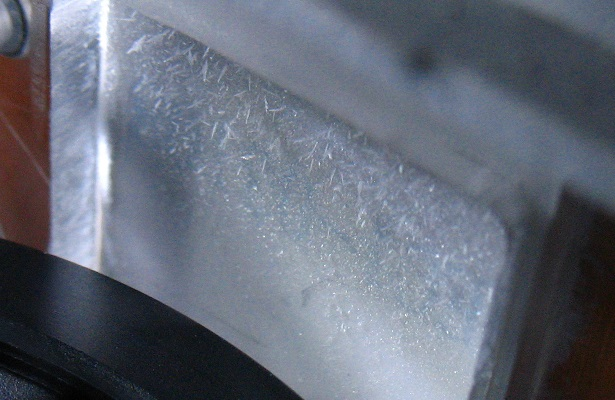 
|